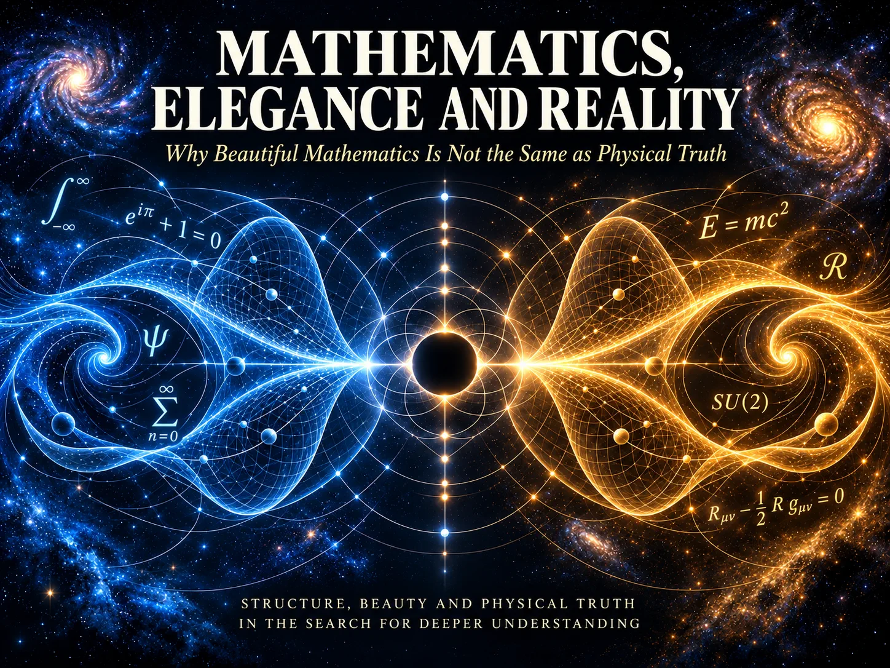
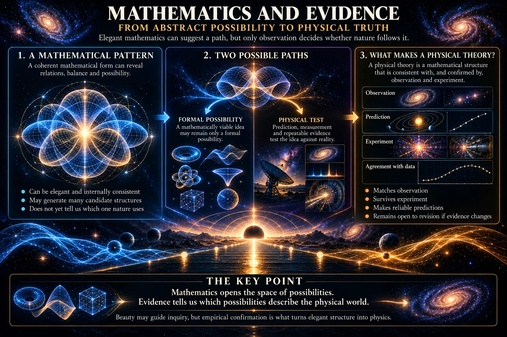
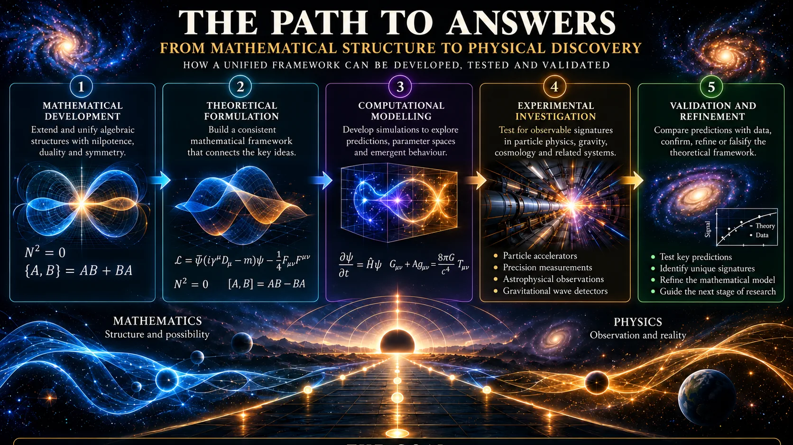
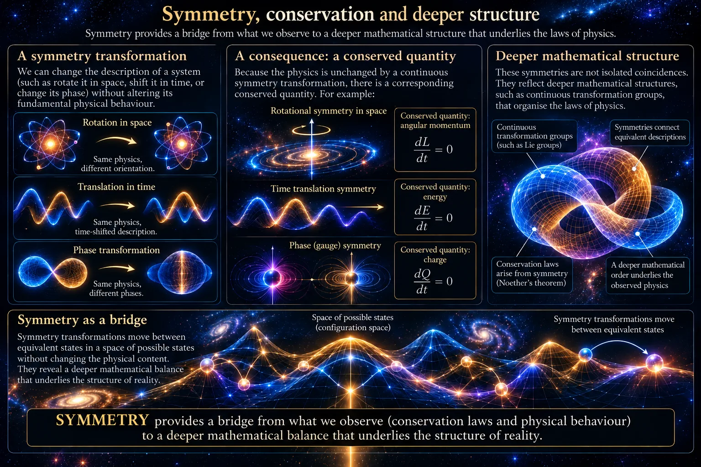
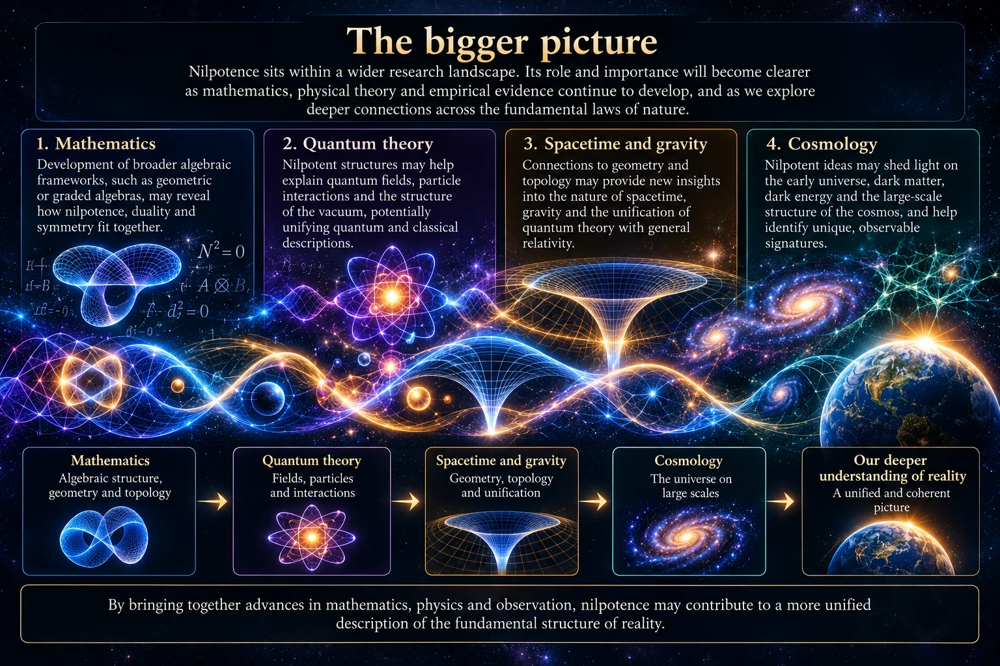
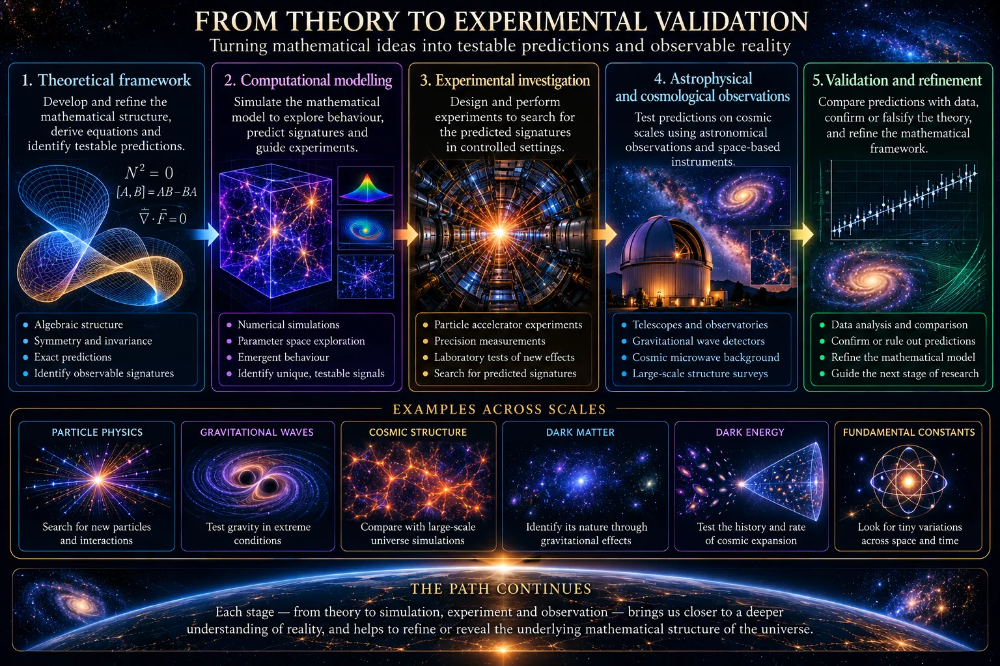
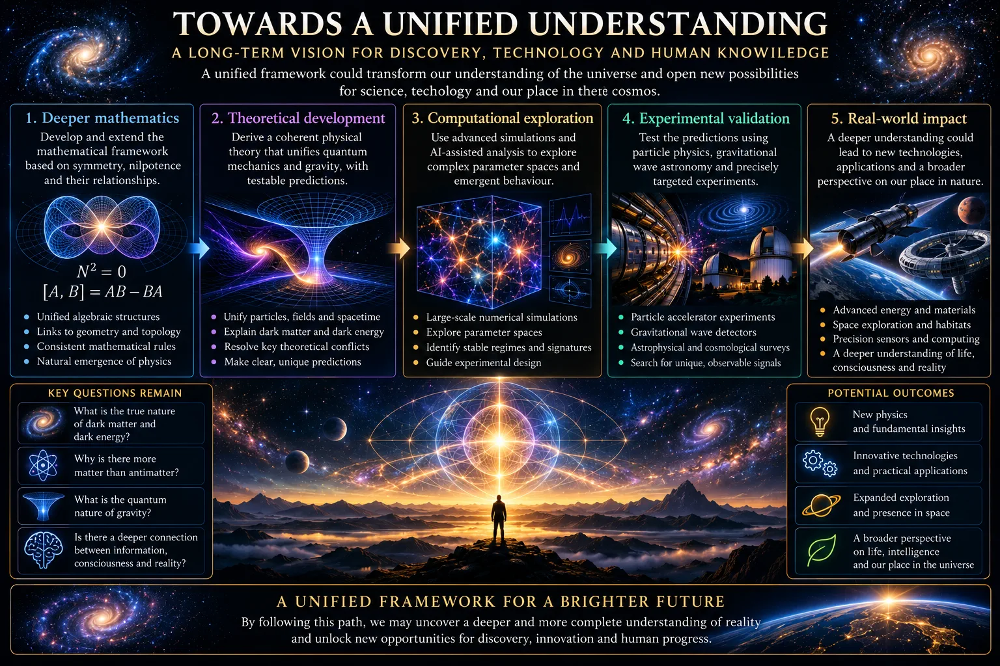

Mathematics, Elegance and Reality
Part IV of the SYMMETRIA Discussion Series
October 2026

Cover Illustration: Mathematical structure can illuminate the physical world with remarkable power, but elegance and internal consistency are not the same as physical truth. The connection between a beautiful mathematical framework and nature must ultimately be established through consequences that can be tested.
1. Introduction
The previous paper considered nilpotence: the possibility that a mathematically structured expression can become zero under repeated multiplication while still containing non-trivial internal content. It examined Peter Rowlands's interpretation of nilpotent Dirac structure, distinguished algebraic zero from the quantum-field vacuum, and asked whether balance and complementarity might have a deeper role in physical explanation.
That discussion leads naturally to a wider question.
If a mathematical structure is elegant, compact and productive, does that give us reason to think it is physically true?
The question matters because physics has repeatedly been guided by mathematical beauty. Maxwell's equations connected electricity, magnetism and light. Einstein's account of gravitation transformed geometry into a physical theory of spacetime. Dirac's relativistic equation for the electron helped prepare the way for the discovery of antimatter. Noether showed that symmetries of physical laws are connected with conservation laws.
Such achievements encourage a powerful intuition: perhaps mathematics does not merely describe reality after the fact. Perhaps it reveals an order already present within reality.
This intuition is understandable, but it requires careful treatment. Mathematics expresses patterns, relationships and logical consequences with unusual precision. Yet it also describes indefinitely many possible structures that nature does not appear to realise. A beautiful equation may be physically fruitful, physically incomplete, physically irrelevant, or simply wrong as a description of the world.
The distinction becomes especially important in foundational physics. Where direct experimental guidance is limited, researchers often rely more heavily on principles such as symmetry, simplicity, unification and internal consistency. These principles can be excellent guides. They reduce arbitrariness, organise difficult problems and help identify promising questions. But their value as guides should not be confused with their value as proof.
There is therefore a tension at the centre of the subject.
On one side, mathematics is a language developed by human beings. It supplies concepts, symbols and structures through which we model the world. Its usefulness might then be explained partly by selection: physicists retain the mathematics that works and abandon what does not.
On the other side, mathematics can seem to reveal physical possibilities before observation makes them obvious. It can expose connections between apparently separate phenomena and constrain the consequences of physical principles with remarkable force. In this stronger view, mathematical structure may be more than convenient language. It may provide a partial window onto the organisation of nature itself.
Neither position can be settled simply by declaring mathematics discovered rather than invented. We choose definitions, notation and the questions worth asking. But once a formal system has been specified, its consequences are not freely chosen. A theorem is not made true because it is aesthetically pleasing. It follows, or fails to follow, from stated assumptions.
Physics introduces a further layer. Even a flawless theorem does not automatically describe anything in nature. To become physics, mathematical objects must be connected to quantities that can in principle be measured: distances, durations, energies, fields, probabilities, spectra, scattering rates or other observables. A model must identify what its terms mean, what conditions it assumes and what difference it makes to experience.
This paper examines that path from mathematical form to physical claim. It asks why mathematics has been so effective in physics, what physicists usually mean when they call a theory elegant, and why elegance remains a heuristic rather than a verdict. It also considers what this means for SYMMETRIA, which is interested in symmetry, constraint, nilpotent structure and emergence.
The aim is not to diminish mathematical beauty. Beauty has often encouraged some of physics' most important questions. The point is more precise: elegance may tell us that an idea is worth investigating. It cannot tell us, by itself, that nature has chosen that idea.

Figure 1.1: Mathematics can describe an enormous landscape of possible structures, relationships and symmetries. Physics narrows that landscape by asking which possibilities correspond to the world we observe, making empirical evidence the essential bridge between mathematical possibility and physical reality.
2. The Strange Effectiveness of Mathematics
Why is mathematics so effective in physics at all?
At first sight, the fit can seem surprising. Mathematics appears abstract. It deals with numbers, shapes, transformations, spaces, functions and logical relations. The physical world appears concrete: planets move, light bends, materials heat and particles collide. Why should formal relationships capture such varied behaviour with such precision?
One answer begins with a simple point. Physics is concerned with regularities. If physical processes were wholly arbitrary, no stable science would be possible. But the world displays repeatable patterns. Objects fall in reproducible ways. Atoms emit characteristic frequencies. Measurements made in different laboratories can be compared because nature is sufficiently regular for common quantities and laws to be meaningful.
Mathematics is particularly well suited to representing regularity. It can state how one quantity changes with another, how a system behaves under a transformation, or how several constraints fit together. It does not imitate the appearance of nature. Instead, it captures relations within nature.
A map offers a modest analogy. A map is not the landscape. It omits almost everything: texture, sound, weather and local history. Yet it can be extremely useful because it preserves selected relations, such as direction, distance and connection. A physical theory is selective in a similar way. It identifies a structure that allows reliable explanation and prediction within a defined domain.
The success of mathematics becomes more striking when a structure reveals consequences that were not obvious when the theory was first formulated. A well-constructed theory does not merely organise known facts. It can constrain what else must be true if its assumptions are correct.
Einstein's general relativity offers a familiar example. The theory treats gravitation as an aspect of spacetime geometry. Matter and energy influence spacetime curvature, while that curvature influences the paths taken by matter and light. The relevant mathematics is demanding, involving geometries that do not behave like the flat space of elementary Euclidean intuition.
Yet the framework did more than provide a new vocabulary for Newtonian gravity. It implied that light should bend near massive bodies, that clocks should run differently in different gravitational conditions, and that disturbances in spacetime geometry could propagate as gravitational waves. These consequences belong to the empirical content of the theory and have been tested with increasing precision.
The lesson is not that geometry compels the universe to be geometric in every conceivable sense. Rather, a mathematical structure can organise physical principles so tightly that new consequences emerge from their combination. Once the relation between spacetime curvature and energy-momentum is specified, the theory has less freedom than a collection of disconnected rules.
Quantum theory provides another example. Complex numbers, which include the familiar imaginary unit, may initially appear to be mathematical curiosities. In quantum mechanics, however, complex amplitudes provide a compact way to encode phase and interference.
The distinction between an amplitude and a probability is essential. A probability tells us how likely an outcome is. An amplitude is a mathematical quantity from which probabilities can be calculated. Amplitudes can combine constructively or destructively, producing interference patterns observed with light, electrons and other quantum systems. The complex structure of the formalism is therefore not an ornament. It helps express a feature of quantum behaviour that ordinary probabilities alone cannot capture.
Still, the presence of complex numbers does not settle a philosophical question about what quantum states "really are". Different interpretations of quantum theory can agree on the same mathematical predictions while disagreeing about ontology. The mathematics supports a tested operational framework. It does not, by itself, force a single metaphysical picture.
Symmetry provides a further example of mathematical effectiveness. Symmetry in physics does not simply mean visual balance. It often means that the laws governing a system remain unchanged under a particular transformation. A system may be shifted in time, moved through space or rotated, while the relevant law retains the same form.
Noether's theorem revealed a profound connection between continuous symmetries and conserved quantities. Under suitable conditions, time-translation symmetry is associated with energy conservation, spatial-translation symmetry with momentum conservation, and rotational symmetry with angular-momentum conservation.
Conservation laws are therefore not separate empirical accidents added one by one to physics. They are linked to structural invariances. Yet the theorem still operates within defined conditions. Its power comes from exact reasoning about those assumptions, not from a general claim that all symmetry is automatically realised in nature.
Dirac's relativistic quantum theory illustrates another dimension of the story. Dirac sought an equation compatible with both quantum mechanics and special relativity. The result required a richer mathematical structure than an ordinary scalar wave equation. Spinors and matrices entered because the known physical requirements could not be met by simpler means.
The theory described spin-one-half particles and implied corresponding antiparticle states. The later discovery of the positron gave Dirac's work a special place in scientific imagination. Here mathematical reasoning pointed beyond what had already been observed. But Dirac did not begin with beauty alone. He worked under strong physical constraints: relativity, quantum principles and the energy-momentum relation. Its elegance emerged partly from meeting demanding physical requirements.
Four levels are often blurred together.
First, there is mathematical consistency. A formal system must be well defined and obey its stated rules without contradiction within the domain under consideration. Consistency is necessary for a serious physical theory, but it does not make the theory true of nature.
Second, there is physical modelling. A theory must say what its symbols represent, how its quantities are measured, how systems evolve and how observations are extracted. This connects formal structure to physical practice.
Third, there is prediction. A model becomes scientifically more demanding when it yields definite consequences from its assumptions: a numerical value, a relationship, a spectrum, a pattern or an effect that can in principle distinguish it from alternatives.
Fourth, there is empirical support. Predictions must survive comparison with the world in their intended domain. Even then, scientific theories remain open to refinement. Their authority comes not from final certainty but from sustained explanatory and predictive success.
Mathematics is powerful because physical theories are not arbitrary stories. They impose relationships that can be followed with precision. But mathematics predicts consequences of a model; whether those consequences belong to nature depends on whether the model's assumptions, interpretation and domain are appropriate.

Figure 2.1: Mathematical frameworks become physically powerful when their internal relationships generate consequences that can be compared with observation. Successful theories do more than organise ideas elegantly: they connect abstract structure to measurable behaviour with sufficient precision to survive experimental challenge.
3. What Do Physicists Mean by Elegance?
When physicists call a theory elegant, they do not usually mean only that it looks attractive on a page. Elegance is a shorthand for several qualities that may be related but should not be treated as identical.
The first is simplicity. A simple theory uses relatively few independent assumptions to account for a relatively wide range of phenomena. Simplicity does not necessarily mean short equations. General relativity is not simple in the sense of being easy to calculate. Quantum field theory is not simple in the sense of containing little mathematics. A theory may be technically demanding yet conceptually economical because it does not require a separate rule for every circumstance.
Simplicity matters because a theory with many adjustable parts can be made to fit almost anything. If every unexpected observation is accommodated by another exception, parameter or unexplained mechanism, the theory may lose explanatory force. A compact framework places constraints on itself. It makes agreement harder to obtain merely by flexible adjustment.
A second quality is symmetry. Symmetry can reduce arbitrariness by identifying transformations that do not alter the underlying physical content. It can reveal that apparently distinct situations belong to a common class. The same physical law may apply in different places, at different times or from different inertial frames. Gauge symmetries play a central role in the Standard Model because they organise how fields and interactions can be described.
Symmetry is attractive not because nature must prefer visual regularity, but because invariance can expose what is structurally essential. A law that depends on an arbitrary coordinate choice is often less satisfactory than one whose physical content remains clear under changes of description.
A third quality is economy of assumptions. Every theory begins somewhere. It may assume a particular spacetime structure, set of fields, transformation rules or dynamical principles. Elegance often means that these starting commitments are limited and mutually supportive rather than accumulated without connection.
Economy is not the same as austerity. A theory should not omit necessary structure merely to appear clean. Nature may be more complicated than a theorist hopes. The better question is whether each assumption earns its place. Does it enable a derivation, resolve a problem, define an observable or connect different phenomena?
A fourth quality is unification. Physics has often advanced when phenomena once treated separately were shown to arise within a common framework. Maxwell connected electricity, magnetism and light. Einstein united space and time into spacetime, then connected gravitation with geometry. Electroweak theory showed that electromagnetic and weak interactions can be understood as aspects of a deeper unified structure under sufficiently energetic conditions.
Unification is powerful because it can turn coincidence into consequence. Instead of saying that two laws happen to resemble one another, a unified theory may show why they must be related. But unification must be substantive. Placing several names beneath one conceptual heading is not enough. A genuine unification reduces independent assumptions, derives relations or yields results that would otherwise remain unexplained.
A fifth quality is internal consistency. The components of a theory must fit together without contradiction, violations of their own symmetries or incompatible predictions in overlapping domains. Difficulties involving infinities, ambiguities or apparent inconsistencies do not automatically invalidate a theory, but they indicate where its formulation or scope needs attention.
Finally, physicists often value generative power. An elegant theory should do more than accommodate what is already known. It should lead to new calculations, connect previously separate problems or suggest phenomena that can be sought experimentally. Generative power does not guarantee success, but it distinguishes a fertile structure from one that is elegant only in retrospect.
These qualities overlap. A theory with strong symmetry may use fewer arbitrary assumptions. A unified theory may be simpler because it replaces several rules with one. Yet none provides a universal measure. A theory can be symmetrical but not simple, simple but insufficiently general, unified but empirically unsuccessful.
There is also an unavoidable human element. Physicists are trained to notice pattern, economy and conceptual fit. What one generation finds elegant may appear artificial to another. Quantum mechanics has produced some of the most accurate predictions in science, yet its interpretation remains philosophically uncomfortable for many people.
Elegance is therefore partly a feature of a theory and partly a feature of the scientific culture evaluating it. This does not make it meaningless. It means that aesthetic judgement must remain answerable to more disciplined standards.
The attraction of nilpotent structure can now be understood more clearly. In Rowlands's work, a carefully arranged algebraic expression involving energy, momentum and mass may square to zero under the appropriate rules. The appeal is that one compact form appears to bring together relativity, quantum structure, spin, particle-antiparticle relations and vacuum interpretation.
Such economy naturally attracts attention. If several established features of physics can be represented through a common algebraic arrangement, that arrangement may reveal something useful about their relationship. It may simplify calculation, clarify conceptual dependencies or make hidden symmetries more visible.
But elegance must be handled carefully. A compact nilpotent representation might be a valuable reformulation of known Dirac structure. It might also support a deeper interpretation, as Rowlands argues. Or it might prove limited when extended to interactions, many-particle systems, gravitation or cosmology. The elegance of a free-particle construction cannot settle these questions in advance.
The same applies to SYMMETRIA. A symmetry-first perspective may be appealing because it seeks common structure beneath familiar distinctions. It may encourage productive questions about emergence, vacuum organisation, information and constraint. But conceptual economy is not empirical confirmation.
Elegance helps decide where to look. It can indicate that a proposal has sufficient order to justify scrutiny. It can also help compare rival formulations when they reproduce the same established physics. But it cannot decide which formulation nature uses unless alternatives lead to distinguishable physical consequences.

Figure 3.1: In physics, elegance usually reflects several connected qualities, including economy, symmetry, coherence, explanatory reach and unifying power. These qualities can guide theory construction, but none of them guarantees that nature has selected the mathematical structure that scientists find most compelling.
4. When Beautiful Mathematics Is Not Enough
The history of physics gives good reason to respect elegance. It also gives good reason not to worship it.
Mathematics contains vastly more possible structures than physics has confirmed. There are many consistent geometries, algebras, dimensions, symmetries and dynamical systems. Some have found applications in physics; many have not. Their existence shows that mathematical possibility is wider than physical actuality.
Nature is not obliged to realise every structure that human beings find compelling. A theory may be elegant because it satisfies intellectual preferences for unity and economy, while the world may contain contingencies, asymmetries or historical conditions that resist simple compression.
An elegant framework can fail in several ways.
It may be internally consistent but physically irrelevant. A mathematician can study a perfectly coherent abstract space without claiming that it describes spacetime. The formal result remains valid within its assumptions. It simply has no established physical application.
It may be physically relevant but non-unique. More than one mathematical representation can describe the same observed phenomena. Coordinates can be changed, variables can be redefined and equations can often be rearranged without altering measurable predictions. In such cases, apparent elegance may reflect a preferred language rather than a unique feature of nature.
It may be underdetermined by available evidence. A theory can agree with all current observations while making no distinct prediction beyond an existing theory. This does not make it false. It may still be useful conceptually or computationally. But evidence does not yet select it as a new physical account.
It may be incomplete. A construction that works for isolated particles may fail to provide a clear account of interactions. A model may reproduce a low-energy approximation while leaving its behaviour at extreme scales unresolved. Elegance in one domain does not automatically travel to every other domain.
It may simply be wrong. A theory can be beautiful, sophisticated and initially persuasive while disagreeing with a later measurement. This is a normal possibility within science. The value of a theory lies partly in its willingness to risk failure through clear consequences.
The danger appears when a sequence of intellectual steps is shortened too aggressively:
interesting idea → mathematics → physical model → quantitative prediction → empirical test
An interesting idea may begin with an analogy, a conceptual tension or an observed regularity. At this stage, it may be suggestive but vague. It becomes mathematics when its objects, operations and assumptions are defined clearly enough to support derivation. It becomes a physical model when those mathematical objects are assigned physical meaning and linked to observables. It becomes a predictive theory when it yields definite consequences that can differ from alternatives. Finally, it becomes scientifically tested when those consequences meet the world.
Each transition is demanding.
The move from idea to mathematics requires precision. Words such as balance, information, emergence or vacuum can carry many meanings. Unless their use is constrained, they can create an impression of depth while allowing different readers to imagine different claims. Mathematical definition narrows interpretation. It forces a proposal to say what it includes, what it excludes and what follows.
The move from mathematics to physical model requires interpretation. Suppose an algebra contains elements with unusual multiplication rules. Are they states, observables, spacetime directions, internal degrees of freedom, fields or bookkeeping devices? How are they transformed between observers? How are composite systems represented? Which combinations correspond to measurable quantities? Without answers, formal elegance remains detached from physical content.
The move from model to prediction requires calculation. A theory must not merely reproduce a phenomenon by assigning values after the fact. It should derive consequences from stated principles and parameters. Ideally, it should identify a quantity whose value, pattern or behaviour can distinguish the model from its rivals.
The move from prediction to test requires vulnerability. A prediction must be definite enough that observation could count against it. If every possible result can be absorbed into the theory by altering an interpretation, then the theory has not exposed itself to empirical risk.
This progression is not bureaucratic. It protects the difference between explaining a fact and redescribing it. A theory that calls a known feature "emergent", "balanced" or "informational" has not necessarily explained it more deeply. The explanation becomes stronger only if the new language derives the feature from clearer premises, relates it to other phenomena or produces new constraints.
Consider symmetry and conservation. It is tempting to say that because symmetry is elegant, any symmetrical construction should correspond to a conserved physical quantity. But Noether's theorem has specific mathematical conditions. It concerns continuous transformations of an action under particular assumptions. Its depth lies in its derivation, not in the general attractiveness of symmetry.
Likewise, a square-zero algebraic expression may be striking, but its physical significance depends on the algebra, the representation, the conditions under which nilpotence holds and the connection to observables. It may reflect an important physical constraint. It may be a reformulation of a known relation. Only careful development can determine which claims are justified.
The proper counterweight to aesthetic attraction is not cynicism. It is a willingness to let nature answer. A theory may be pursued because it is beautiful, but it should also be framed so that it can be corrected, limited or rejected. This is what turns imaginative speculation into scientific inquiry.

Figure 4.1: Many mathematically coherent possibilities can exist simultaneously, including structures that are beautiful but physically irrelevant. A candidate theory becomes scientifically meaningful only when a credible path can be traced from its formal structure to consequences that distinguish it from competing descriptions.
5. What This Means for SYMMETRIA
The argument applies directly to SYMMETRIA.
SYMMETRIA is interested in whether symmetry, algebraic constraint, nilpotent structure, complementarity and emergence may help organise a deeper account of physical reality. These are legitimate questions. They connect with established themes in physics, including symmetry principles, quantum fields, relativistic structure and the search for unification.
But interest is not evidence. The framework should not treat the apparent elegance of a symmetry-first perspective as confirmation that the perspective is physically correct. Nor should it treat resonance with Rowlands's nilpotent ideas as proof that later extensions follow from his work or are endorsed by him.
Rowlands's programme is an important source of motivation. His nilpotent treatment of Dirac structure asks whether a compact algebraic form can expose deeper relations between energy, momentum, mass, spin and vacuum. That proposal deserves to be understood on its own terms. It may illuminate familiar physics in a distinctive way, and it raises serious questions about what a particle state represents.
SYMMETRIA inherits questions from this territory. It does not inherit settled answers. Where it considers wider themes such as layered emergence, informational organisation or deeper symmetry relationships, these are exploratory directions requiring independent definition and justification. They should not be retrospectively attributed to Rowlands, and they should not be presented as established results.
For SYMMETRIA to become more than a conceptual vocabulary, it must ultimately satisfy demanding standards.
The first is mathematical coherence.
The framework must state its mathematical commitments clearly. What algebraic or geometric structure is being used? What are its fundamental elements? What multiplication, transformation and composition rules apply? Where does nilpotence enter, if it enters at all? What is assumed about space, time, fields, states or observables?
Coherence is more than avoiding obvious contradiction. It includes demonstrating that definitions work together, that calculations are well posed, and that the framework does not quietly rely on incompatible assumptions. A proposal cannot claim explanatory depth if its basic objects remain ambiguous.
The second standard is recovery of established physics where appropriate.
Any deeper framework must account for the extraordinary successes already achieved by quantum theory, relativity and the Standard Model in their tested domains. This does not require every new proposal to reproduce every calculation immediately. But it does require a credible route by which established results are recovered.
If a framework concerns relativistic particles, it should reproduce relevant free-particle behaviour, transformation properties and conserved quantities. If it claims relevance to quantum theory, it must explain how probabilities, amplitudes, states and measurements are handled. If it invokes symmetry, it must show how known symmetry principles and their consequences emerge rather than merely referring to them.
Recovery matters because established physics is not a collection of optional conventions. Its equations have survived demanding comparison with experiment. A new framework earns credibility by explaining why those results remain valid, not by setting them aside because they appear incomplete.
The third standard is genuine explanatory gain rather than relabelling.
A new language can be useful. It may make a familiar relation more transparent or simplify a difficult calculation. But renamed concepts are not automatically deeper concepts. To claim explanatory gain, SYMMETRIA would need to identify what becomes derivable, constrained or intelligible that was previously left separate or assumed.
If an algebraic construction represents known energy-momentum relations in a new form, the first question is whether the new form is equivalent to existing descriptions. If it is equivalent, that may still be valuable. It may reveal a symmetry or reduce computational complexity. But it is a reformulation with potential insight, not necessarily a new physical law.
The fourth standard is predictive distinction from existing descriptions.
If SYMMETRIA claims new physical content, it must eventually identify a result that differs from existing descriptions under specified conditions. The difference could concern a spectrum, a relation between quantities, a scattering process, a vacuum response, a cosmological signature or another measurable effect. It must be quantitative, or at least definite enough to be checked.
The fifth standard is falsifiability and experimental vulnerability.
A framework should expose conditions under which it would be judged inadequate. This does not mean that one unexpected result destroys every related idea. Real theories often require refinement. It means that central claims must not be compatible with every possible outcome.
These standards are not obstacles placed in the way of ambitious thought. They are the route by which ambition becomes assessable. A framework that survived them would be more than elegant. It would have shown why its structure matters physically.
The same discipline should shape the use of terms such as emergence, information and vacuum. These words can point towards fruitful problems, but each requires a specific role in a formal model. Does information mean entropy, correlation, state distinguishability or computational description? Does emergence mean coarse-graining, symmetry breaking, collective dynamics or a relation between scales? Does vacuum mean a ground state of a field theory, an algebraic complement or a philosophical concept of totality?
The answers cannot be supplied by verbal association. They must be built into the mathematics and connected to physical quantities.
At this stage, SYMMETRIA is best understood as an exploratory framework. Its possible value lies in the questions it gathers and sharpens: whether deeper organisational principles can connect apparently separate physical structures; whether nilpotent ideas can be developed beyond a suggestive reformulation; whether symmetry and constraint can help explain emergence without dissolving into metaphor.
The appropriate attitude is neither acceptance nor dismissal. It is disciplined curiosity.

Figure 5.1: An exploratory framework becomes scientifically stronger by progressing from clear mathematics to reproducible calculation, recovery of established physics, quantitative modelling and distinct testable consequences. Each stage reduces interpretive freedom and increases the possibility that the framework can genuinely be falsified.
6. From Mathematical Beauty to Physical Structure
The relationship between mathematics and reality is one of the enduring mysteries of science. Mathematics allows physicists to state relationships with unusual precision, follow implications beyond immediate intuition and discover connections between phenomena that initially appear unrelated.
This power explains why elegance matters.
Simplicity can reduce arbitrary assumptions. Symmetry can reveal invariances beneath changing appearances. Consistency can expose whether a proposed structure holds together. Unification can show that separate laws are aspects of a common framework. Predictive power can turn a conceptual proposal into a claim about the world.
Yet none of these qualities is proof on its own.
Mathematical beauty is neither a guarantee of truth nor an irrelevant decoration. It is a heuristic: a reason to investigate, compare, derive and test. Its physical significance must be earned through the full path from formal structure to observation.
| Mathematical quality | Why it matters | What it cannot prove |
|---|---|---|
| Simplicity | Reduces arbitrary assumptions | That nature is simple |
| Symmetry | Reveals structural invariance | That every symmetry is realised |
| Consistency | Makes calculation coherent | Physical relevance |
| Unification | Connects separate phenomena | Empirical correctness |
| Prediction | Risks comparison with data | Success before testing |
This conclusion does not weaken the search for deeper principles. It gives that search its proper discipline. Physics has advanced not by refusing imaginative ideas, but by requiring them to become precise enough for nature to answer. Einstein's geometry, Dirac's spinors and Noether's theorem became physically significant because they were not left as aesthetic possibilities. They entered theories with defined meanings, derivable consequences and empirical responsibilities.
The same standard applies to nilpotent ideas. Rowlands's work may offer a compact and provocative way of organising aspects of relativistic quantum structure. Its broader interpretation remains a subject for scrutiny. Nilpotence may prove useful as a language of balance, complementarity or constraint. But whether it reveals a deeper foundation of nature depends on what it can derive and what it can distinguish observationally.
The same standard applies to SYMMETRIA. The framework may be motivated by genuine questions about symmetry, emergence and mathematical organisation. It may identify patterns worth formalising. But it must not mistake conceptual resonance for confirmation. It must state what its structures are, show what they recover, identify what they add and accept the possibility that some attractive ideas will fail.
There is also a philosophical lesson. Human beings are drawn to unity because unity makes understanding possible. Sometimes that preference has led to genuine discovery. Sometimes it has led us to expect more neatness than nature provides.
The mature response is not to abandon the desire for order. It is to hold it alongside humility. A simple law may produce complex behaviour. A highly symmetrical rule may permit asymmetric outcomes. A mathematically unified framework may still require many levels of effective description before it can account for atoms, materials, stars or minds.
That point opens the next question.
If deep mathematical structure genuinely corresponds to nature, how does the layered richness of physical reality emerge from it? How can a world governed by concise principles contain particles, fields, chemistry, organisms and observers? How do different levels of description remain connected without being reduced to a simplistic picture?
These questions lead naturally towards Emergence and Layered Reality. The next paper will consider how physical systems display new forms of organisation at different scales, and why a search for fundamental order must also account for the diversity that order makes possible.

Figure 6.1: The deeper question is not only whether mathematics captures fundamental physical structure, but how the complexity of the observed world could emerge from that structure. This provides the transition from mathematical foundations toward the next SYMMETRIA discussion of emergence and layered reality.